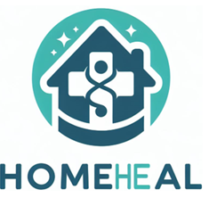

AI Assisted Care Plan for Home Health Wound Care
Optimizing care sequences to reduce hospital readmissions
AI Care Planner Assistant
Enter patient information to receive personalized wound care recommendations
Patient Assessment
Hold Ctrl/Cmd to select multiple
Welcome to the AI Care Planner. Please fill out the patient assessment form to receive a personalized wound care plan. You can also ask specific questions about wound care in the chat below.